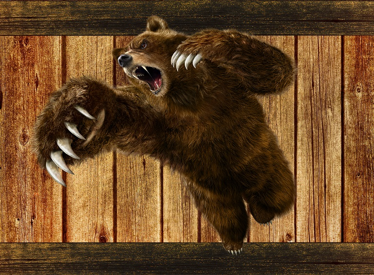

Итак, наша ловушка готова и вы дождались потенциальную косолапую жертву. Что делать дальше? Главное не растеряться, и дернуть посильнее за петлю.
Медведь должен упасть (если не упал, то бегите и не отчаивайтесь. В следующий раз у вас обязательно все получится!).
После падения медведя стукните ему по голове балалайкой, или швырните в него матрешкой .
Далее вам просто остается связать жертву и отнести домой. P.S: Не забудьте отстроить медведю конуру.

"...Шел я как-то по лесу Шел по грибы, по ягоды Вдруг из кустов неспешно, выходит медведдь косолапый
Смотрит в очи мне хитро Что-то сказать желает Тут я смекнул лихо Чего-то ему не хвататет..." (С) Нейромонах Феофан
How in practice to catch a bear on a turnip
So, our trap is ready and you have waited for a potential clumsy victim. What to do next? The main thing is not to get confused, and pull harder for the noose.
The bear must fall (if it does not fall, then run and do not despair. Next time you will definitely succeed!).
After the fall of the bear, hit him on the head with a balalaika, or hurl a matryoshka ).
Then you just need to link the victim and take it home. P.S: Do not forget to rebuild the kennel.
"... I was walking in the forest somehow He walked for mushrooms, for berries Suddenly out of the bushes slowly, The bear knees out
Looks into my eyes slyly Something to say wishes Then I thinked dashingly Something he does not have ..." (С) Neuromonk Theophanes